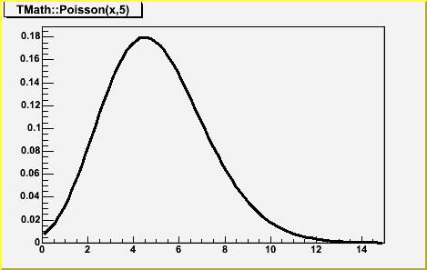
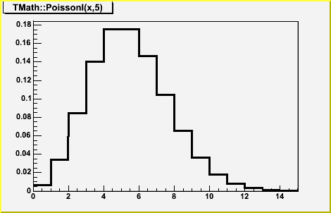
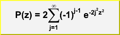
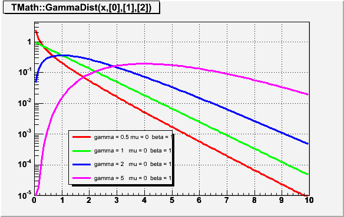
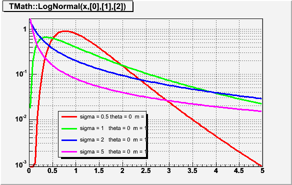
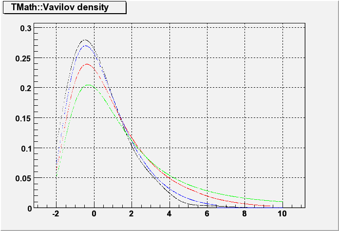

namespace TMath
TMath Encapsulate math routines.
Function Members (Methods)
public:
Class Charts
Function documentation
Double_t DiLog(Double_t x)
The DiLogarithm function Code translated by R.Brun from CERNLIB DILOG function C332
Double_t Erf(Double_t x)
Computation of the error function erf(x). Erf(x) = (2/sqrt(pi)) Integral(exp(-t^2))dt between 0 and x
Double_t Erfc(Double_t x)
Compute the complementary error function erfc(x). Erfc(x) = (2/sqrt(pi)) Integral(exp(-t^2))dt between x and infinity
Double_t ErfcInverse(Double_t x)
returns the inverse of the complementary error function x must be 0<x<2 implement using the quantile of the normal distribution instead of ErfInverse for better numerical precision for large x
Double_t Freq(Double_t x)
Computation of the normal frequency function freq(x). Freq(x) = (1/sqrt(2pi)) Integral(exp(-t^2/2))dt between -infinity and x. Translated from CERNLIB C300 by Rene Brun.
Double_t Gamma(Double_t z)
Computation of gamma(z) for all z. C.Lanczos, SIAM Journal of Numerical Analysis B1 (1964), 86.
Double_t BreitWigner(Double_t x, Double_t mean = 0, Double_t gamma = 1)
Calculate a Breit Wigner function with mean and gamma.
Double_t Landau(Double_t x, Double_t mpv = 0, Double_t sigma = 1, Bool_t norm = kFALSE)
The LANDAU function. mpv is a location parameter and correspond approximatly to the most probable value and sigma is a scale parameter (not the sigma of the full distribution which is not defined) Note that for mpv=0 and sigma=1 (default values) the exact location of the maximum of the distribution (most proble value) is at x = -0.22278 This function has been adapted from the CERNLIB routine G110 denlan. If norm=kTRUE (default is kFALSE) the result is divided by sigma
Double_t LnGamma(Double_t z)
Computation of ln[gamma(z)] for all z. C.Lanczos, SIAM Journal of Numerical Analysis B1 (1964), 86. The accuracy of the result is better than 2e-10. --- Nve 14-nov-1998 UU-SAP Utrecht
Float_t Normalize(Float_t v[3])
Normalize a vector v in place. Returns the norm of the original vector.
Double_t Normalize(Double_t v[3])
Normalize a vector v in place. Returns the norm of the original vector. This implementation (thanks Kevin Lynch <krlynch@bu.edu>) is protected against possible overflows.
Double_t Poisson(Double_t x, Double_t par)
compute the Poisson distribution function for (x,par) The Poisson PDF is implemented by means of Euler's Gamma-function (for the factorial), so for all integer arguments it is correct. BUT for non-integer values it IS NOT equal to the Poisson distribution. see TMath::PoissonI to get a non-smooth function. Note that for large values of par, it is better to call TMath::Gaus(x,par,sqrt(par),kTRUE)/*  */
Double_t PoissonI(Double_t x, Double_t par)
compute the Poisson distribution function for (x,par) This is a non-smooth function. This function is equivalent to ROOT::Math::poisson_pdf/*  */
Double_t Prob(Double_t chi2, Int_t ndf)
Computation of the probability for a certain Chi-squared (chi2) and number of degrees of freedom (ndf). Calculations are based on the incomplete gamma function P(a,x), where a=ndf/2 and x=chi2/2. P(a,x) represents the probability that the observed Chi-squared for a correct model should be less than the value chi2. The returned probability corresponds to 1-P(a,x), which denotes the probability that an observed Chi-squared exceeds the value chi2 by chance, even for a correct model. --- NvE 14-nov-1998 UU-SAP Utrecht
Double_t KolmogorovProb(Double_t z)
Calculates the Kolmogorov distribution function,/*  */
which gives the probability that Kolmogorov's test statistic will exceed the value z assuming the null hypothesis. This gives a very powerful test for comparing two one-dimensional distributions. see, for example, Eadie et al, "statistocal Methods in Experimental Physics', pp 269-270). This function returns the confidence level for the null hypothesis, where: z = dn*sqrt(n), and dn is the maximum deviation between a hypothetical distribution function and an experimental distribution with n events NOTE: To compare two experimental distributions with m and n events, use z = sqrt(m*n/(m+n))*dn Accuracy: The function is far too accurate for any imaginable application. Probabilities less than 10^-15 are returned as zero. However, remember that the formula is only valid for "large" n. Theta function inversion formula is used for z <= 1 This function was translated by Rene Brun from PROBKL in CERNLIB.
Double_t KolmogorovTest(Int_t na, const Double_t* a, Int_t nb, const Double_t* b, Option_t* option)
Statistical test whether two one-dimensional sets of points are compatible
with coming from the same parent distribution, using the Kolmogorov test.
That is, it is used to compare two experimental distributions of unbinned data.
Input:
a,b: One-dimensional arrays of length na, nb, respectively.
The elements of a and b must be given in ascending order.
option is a character string to specify options
"D" Put out a line of "Debug" printout
"M" Return the Maximum Kolmogorov distance instead of prob
Output:
The returned value prob is a calculated confidence level which gives a
statistical test for compatibility of a and b.
Values of prob close to zero are taken as indicating a small probability
of compatibility. For two point sets drawn randomly from the same parent
distribution, the value of prob should be uniformly distributed between
zero and one.
in case of error the function return -1
If the 2 sets have a different number of points, the minimum of
the two sets is used.
Method:
The Kolmogorov test is used. The test statistic is the maximum deviation
between the two integrated distribution functions, multiplied by the
normalizing factor (rdmax*sqrt(na*nb/(na+nb)).
Code adapted by Rene Brun from CERNLIB routine TKOLMO (Fred James)
(W.T. Eadie, D. Drijard, F.E. James, M. Roos and B. Sadoulet,
Statistical Methods in Experimental Physics, (North-Holland,
Amsterdam 1971) 269-271)
Method Improvement by Jason A Detwiler (JADetwiler@lbl.gov)
The nuts-and-bolts of the TMath::KolmogorovTest() algorithm is a for-loop
over the two sorted arrays a and b representing empirical distribution
functions. The for-loop handles 3 cases: when the next points to be
evaluated satisfy a>b, a<b, or a=b:
for (Int_t i=0;i<na+nb;i++) {
if (a[ia-1] < b[ib-1]) {
rdiff -= sa;
ia++;
if (ia > na) {ok = kTRUE; break;}
} else if (a[ia-1] > b[ib-1]) {
rdiff += sb;
ib++;
if (ib > nb) {ok = kTRUE; break;}
} else {
rdiff += sb - sa;
ia++;
ib++;
if (ia > na) {ok = kTRUE; break;}
if (ib > nb) {ok = kTRUE; break;}
}
rdmax = TMath::Max(rdmax,TMath::Abs(rdiff));
}
For the last case, a=b, the algorithm advances each array by one index in an
attempt to move through the equality. However, this is incorrect when one or
the other of a or b (or both) have a repeated value, call it x. For the KS
statistic to be computed properly, rdiff needs to be calculated after all of
the a and b at x have been tallied (this is due to the definition of the
empirical distribution function; another way to convince yourself that the
old CERNLIB method is wrong is that it implies that the function defined as the
difference between a and b is multi-valued at x -- besides being ugly, this
would invalidate Kolmogorov's theorem).
The solution is to just add while-loops into the equality-case handling to
perform the tally:
} else {
double x = a[ia-1];
while(a[ia-1] == x && ia <= na) {
rdiff -= sa;
ia++;
}
while(b[ib-1] == x && ib <= nb) {
rdiff += sb;
ib++;
}
if (ia > na) {ok = kTRUE; break;}
if (ib > nb) {ok = kTRUE; break;}
}
NOTE1
A good description of the Kolmogorov test can be seen at:
http://www.itl.nist.gov/div898/handbook/eda/section3/eda35g.htm
Double_t Voigt(Double_t x, Double_t sigma, Double_t lg, Int_t r = 4)
Computation of Voigt function (normalised). Voigt is a convolution of gauss(xx) = 1/(sqrt(2*pi)*sigma) * exp(xx*xx/(2*sigma*sigma) and lorentz(xx) = (1/pi) * (lg/2) / (xx*xx + lg*lg/4) functions. The Voigt function is known to be the real part of Faddeeva function also called complex error function [2]. The algoritm was developed by J. Humlicek [1]. This code is based on fortran code presented by R. J. Wells [2]. Translated and adapted by Miha D. Puc To calculate the Faddeeva function with relative error less than 10^(-r). r can be set by the the user subject to the constraints 2 <= r <= 5. [1] J. Humlicek, JQSRT, 21, 437 (1982). [2] R.J. Wells "Rapid Approximation to the Voigt/Faddeeva Function and its Derivatives" JQSRT 62 (1999), pp 29-48. http://www-atm.physics.ox.ac.uk/user/wells/voigt.html
Bool_t RootsCubic(const Double_t* coef, Double_t& a, Double_t& b, Double_t& c)
Calculates roots of polynomial of 3rd order a*x^3 + b*x^2 + c*x + d, where a == coef[3], b == coef[2], c == coef[1], d == coef[0] coef[3] must be different from 0 If the boolean returned by the method is false: ==> there are 3 real roots a,b,c If the boolean returned by the method is true: ==> there is one real root a and 2 complex conjugates roots (b+i*c,b-i*c) Author: Francois-Xavier Gentit
void Quantiles(Int_t n, Int_t nprob, Double_t* x, Double_t* quantiles, Double_t* prob, Bool_t isSorted = kTRUE, Int_t* index = 0, Int_t type = 7)
Computes sample quantiles, corresponding to the given probabilities
Parameters:
x -the data sample
n - its size
quantiles - computed quantiles are returned in there
prob - probabilities where to compute quantiles
nprob - size of prob array
isSorted - is the input array x sorted?
NOTE, that when the input is not sorted, an array of integers of size n needs
to be allocated. It can be passed by the user in parameter index,
or, if not passed, it will be allocated inside the function
type - method to compute (from 1 to 9). Following types are provided:
Discontinuous:
type=1 - inverse of the empirical distribution function
type=2 - like type 1, but with averaging at discontinuities
type=3 - SAS definition: nearest even order statistic
Piecwise linear continuous:
In this case, sample quantiles can be obtained by linear interpolation
between the k-th order statistic and p(k).
type=4 - linear interpolation of empirical cdf, p(k)=k/n;
type=5 - a very popular definition, p(k) = (k-0.5)/n;
type=6 - used by Minitab and SPSS, p(k) = k/(n+1);
type=7 - used by S-Plus and R, p(k) = (k-1)/(n-1);
type=8 - resulting sample quantiles are approximately median unbiased
regardless of the distribution of x. p(k) = (k-1/3)/(n+1/3);
type=9 - resulting sample quantiles are approximately unbiased, when
the sample comes from Normal distribution. p(k)=(k-3/8)/(n+1/4);
default type = 7
References:
1) Hyndman, R.J and Fan, Y, (1996) "Sample quantiles in statistical packages"
American Statistician, 50, 361-365
2) R Project documentation for the function quantile of package {stats}
void BubbleHigh(Int_t Narr, Double_t* arr1, Int_t* arr2)
Bubble sort variant to obtain the order of an array's elements into an index in order to do more useful things than the standard built in functions. *arr1 is unchanged; *arr2 is the array of indicies corresponding to the decending value of arr1 with arr2[0] corresponding to the largest arr1 value and arr2[Narr] the smallest. Author: Adrian Bevan (bevan@slac.stanford.edu)
void BubbleLow(Int_t Narr, Double_t* arr1, Int_t* arr2)
Opposite ordering of the array arr2[] to that of BubbleHigh. Author: Adrian Bevan (bevan@slac.stanford.edu)
ULong_t Hash(const void* txt, Int_t ntxt)
Calculates hash index from any char string. Based on precalculated table of 256 specially selected numbers. These numbers are selected in such a way, that for string length == 4 (integer number) the hash is unambigous, i.e. from hash value we can recalculate input (no degeneration). The quality of hash method is good enough, that "random" numbers made as R = Hash(1), Hash(2), ...Hash(N) tested by <R>, <R*R>, <Ri*Ri+1> gives the same result as for libc rand(). For string: i = TMath::Hash(string,nstring); For int: i = TMath::Hash(&intword,sizeof(int)); For pointer: i = TMath::Hash(&pointer,sizeof(void*)); V.Perev This function is kept for back compatibility. The code previously in this function has been moved to the static function TString::Hash
Double_t BesselI0(Double_t x)
Compute the modified Bessel function I_0(x) for any real x. --- NvE 12-mar-2000 UU-SAP Utrecht
Double_t BesselK0(Double_t x)
Compute the modified Bessel function K_0(x) for positive real x.
M.Abramowitz and I.A.Stegun, Handbook of Mathematical Functions,
Applied Mathematics Series vol. 55 (1964), Washington.
--- NvE 12-mar-2000 UU-SAP Utrecht
Double_t BesselI1(Double_t x)
Compute the modified Bessel function I_1(x) for any real x.
M.Abramowitz and I.A.Stegun, Handbook of Mathematical Functions,
Applied Mathematics Series vol. 55 (1964), Washington.
--- NvE 12-mar-2000 UU-SAP Utrecht
Double_t BesselK1(Double_t x)
Compute the modified Bessel function K_1(x) for positive real x.
M.Abramowitz and I.A.Stegun, Handbook of Mathematical Functions,
Applied Mathematics Series vol. 55 (1964), Washington.
--- NvE 12-mar-2000 UU-SAP Utrecht
Double_t BesselK(Int_t n, Double_t x)
Compute the Integer Order Modified Bessel function K_n(x) for n=0,1,2,... and positive real x. --- NvE 12-mar-2000 UU-SAP Utrecht
Double_t BesselI(Int_t n, Double_t x)
Compute the Integer Order Modified Bessel function I_n(x) for n=0,1,2,... and any real x. --- NvE 12-mar-2000 UU-SAP Utrecht
Double_t BetaCf(Double_t x, Double_t a, Double_t b)
Continued fraction evaluation by modified Lentz's method used in calculation of incomplete Beta function.
Double_t BetaDist(Double_t x, Double_t p, Double_t q)
Computes the probability density function of the Beta distribution (the distribution function is computed in BetaDistI). The first argument is the point, where the function will be computed, second and third are the function parameters. Since the Beta distribution is bounded on both sides, it's often used to represent processes with natural lower and upper limits.
Double_t BetaDistI(Double_t x, Double_t p, Double_t q)
Computes the distribution function of the Beta distribution. The first argument is the point, where the function will be computed, second and third are the function parameters. Since the Beta distribution is bounded on both sides, it's often used to represent processes with natural lower and upper limits.
Double_t BetaIncomplete(Double_t x, Double_t a, Double_t b)
Calculates the incomplete Beta-function.
Double_t BinomialI(Double_t p, Int_t n, Int_t k)
Suppose an event occurs with probability _p_ per trial Then the probability P of its occuring _k_ or more times in _n_ trials is termed a cumulative binomial probability the formula is P = sum_from_j=k_to_n(TMath::Binomial(n, j)* *TMath::Power(p, j)*TMath::Power(1-p, n-j) For _n_ larger than 12 BetaIncomplete is a much better way to evaluate the sum than would be the straightforward sum calculation for _n_ smaller than 12 either method is acceptable ("Numerical Recipes") --implementation by Anna Kreshuk
Double_t CauchyDist(Double_t x, Double_t t = 0, Double_t s = 1)
Computes the density of Cauchy distribution at point x
by default, standard Cauchy distribution is used (t=0, s=1)
t is the location parameter
s is the scale parameter
The Cauchy distribution, also called Lorentzian distribution,
is a continuous distribution describing resonance behavior
The mean and standard deviation of the Cauchy distribution are undefined.
The practical meaning of this is that collecting 1,000 data points gives
no more accurate an estimate of the mean and standard deviation than
does a single point.
The formula was taken from "Engineering Statistics Handbook" on site
http://www.itl.nist.gov/div898/handbook/eda/section3/eda3663.htm
Implementation by Anna Kreshuk.
Example:
TF1* fc = new TF1("fc", "TMath::CauchyDist(x, [0], [1])", -5, 5);
fc->SetParameters(0, 1);
fc->Draw();
Double_t ChisquareQuantile(Double_t p, Double_t ndf)
Evaluate the quantiles of the chi-squared probability distribution function. Algorithm AS 91 Appl. Statist. (1975) Vol.24, P.35 implemented by Anna Kreshuk. Incorporates the suggested changes in AS R85 (vol.40(1), pp.233-5, 1991) Parameters: p - the probability value, at which the quantile is computed ndf - number of degrees of freedom
Double_t FDist(Double_t F, Double_t N, Double_t M)
Computes the density function of F-distribution (probability function, integral of density, is computed in FDistI). Parameters N and M stand for degrees of freedom of chi-squares mentioned above parameter F is the actual variable x of the density function p(x) and the point at which the density function is calculated. About F distribution: F-distribution arises in testing whether two random samples have the same variance. It is the ratio of two chi-square distributions, with N and M degrees of freedom respectively, where each chi-square is first divided by it's number of degrees of freedom. Implementation by Anna Kreshuk.
Double_t FDistI(Double_t F, Double_t N, Double_t M)
Calculates the cumulative distribution function of F-distribution, this function occurs in the statistical test of whether two observed samples have the same variance. For this test a certain statistic F, the ratio of observed dispersion of the first sample to that of the second sample, is calculated. N and M stand for numbers of degrees of freedom in the samples 1-FDistI() is the significance level at which the hypothesis "1 has smaller variance than 2" can be rejected. A small numerical value of 1 - FDistI() implies a very significant rejection, in turn implying high confidence in the hypothesis "1 has variance greater than 2". Implementation by Anna Kreshuk.
Double_t GammaDist(Double_t x, Double_t gamma, Double_t mu = 0, Double_t beta = 1)
Computes the density function of Gamma distribution at point x. gamma - shape parameter mu - location parameter beta - scale parameter The definition can be found in "Engineering Statistics Handbook" on site http://www.itl.nist.gov/div898/handbook/eda/section3/eda366b.htm use now implementation in ROOT::Math::gamma_pdf/*  */
Double_t LaplaceDist(Double_t x, Double_t alpha = 0, Double_t beta = 1)
Computes the probability density function of Laplace distribution at point x, with location parameter alpha and shape parameter beta. By default, alpha=0, beta=1 This distribution is known under different names, most common is double exponential distribution, but it also appears as the two-tailed exponential or the bilateral exponential distribution
Double_t LaplaceDistI(Double_t x, Double_t alpha = 0, Double_t beta = 1)
Computes the distribution function of Laplace distribution at point x, with location parameter alpha and shape parameter beta. By default, alpha=0, beta=1 This distribution is known under different names, most common is double exponential distribution, but it also appears as the two-tailed exponential or the bilateral exponential distribution
Double_t LogNormal(Double_t x, Double_t sigma, Double_t theta = 0, Double_t m = 1)
Computes the density of LogNormal distribution at point x. Variable X has lognormal distribution if Y=Ln(X) has normal distribution sigma is the shape parameter theta is the location parameter m is the scale parameter The formula was taken from "Engineering Statistics Handbook" on site http://www.itl.nist.gov/div898/handbook/eda/section3/eda3669.htm Implementation using ROOT::Math::lognormal_pdf/*  */
Double_t NormQuantile(Double_t p)
Computes quantiles for standard normal distribution N(0, 1) at probability p ALGORITHM AS241 APPL. STATIST. (1988) VOL. 37, NO. 3, 477-484.
Bool_t Permute(Int_t n, Int_t* a)
Simple recursive algorithm to find the permutations of n natural numbers, not necessarily all distinct adapted from CERNLIB routine PERMU. The input array has to be initialised with a non descending sequence. The method returns kFALSE when all combinations are exhausted.
Double_t Student(Double_t T, Double_t ndf)
Computes density function for Student's t- distribution (the probability function (integral of density) is computed in StudentI). First parameter stands for x - the actual variable of the density function p(x) and the point at which the density is calculated. Second parameter stands for number of degrees of freedom. About Student distribution: Student's t-distribution is used for many significance tests, for example, for the Student's t-tests for the statistical significance of difference between two sample means and for confidence intervals for the difference between two population means. Example: suppose we have a random sample of size n drawn from normal distribution with mean Mu and st.deviation Sigma. Then the variable t = (sample_mean - Mu)/(sample_deviation / sqrt(n)) has Student's t-distribution with n-1 degrees of freedom. NOTE that this function's second argument is number of degrees of freedom, not the sample size. As the number of degrees of freedom grows, t-distribution approaches Normal(0,1) distribution. Implementation by Anna Kreshuk.
Double_t StudentQuantile(Double_t p, Double_t ndf, Bool_t lower_tail = kTRUE)
Computes quantiles of the Student's t-distribution 1st argument is the probability, at which the quantile is computed 2nd argument - the number of degrees of freedom of the Student distribution When the 3rd argument lower_tail is kTRUE (default)- the algorithm returns such x0, that P(x < x0)=p upper tail (lower_tail is kFALSE)- the algorithm returns such x0, that P(x > x0)=p the algorithm was taken from G.W.Hill, "Algorithm 396, Student's t-quantiles" "Communications of the ACM", 13(10), October 1970
Double_t Vavilov(Double_t x, Double_t kappa, Double_t beta2)
Returns the value of the Vavilov density function Parameters: 1st - the point were the density function is evaluated 2nd - value of kappa (distribution parameter) 3rd - value of beta2 (distribution parameter) The algorithm was taken from the CernLib function vavden(G115) Reference: A.Rotondi and P.Montagna, Fast Calculation of Vavilov distribution Nucl.Instr. and Meth. B47(1990), 215-224 Accuracy: quote from the reference above: "The resuls of our code have been compared with the values of the Vavilov density function computed numerically in an accurate way: our approximation shows a difference of less than 3% around the peak of the density function, slowly increasing going towards the extreme tails to the right and to the left"/*  */
Double_t VavilovI(Double_t x, Double_t kappa, Double_t beta2)
Returns the value of the Vavilov distribution function Parameters: 1st - the point were the density function is evaluated 2nd - value of kappa (distribution parameter) 3rd - value of beta2 (distribution parameter) The algorithm was taken from the CernLib function vavden(G115) Reference: A.Rotondi and P.Montagna, Fast Calculation of Vavilov distribution Nucl.Instr. and Meth. B47(1990), 215-224 Accuracy: quote from the reference above: "The resuls of our code have been compared with the values of the Vavilov density function computed numerically in an accurate way: our approximation shows a difference of less than 3% around the peak of the density function, slowly increasing going towards the extreme tails to the right and to the left"
template <typename T> inline T NormCross(const T v1[3],const T v2[3],T out[3])
Calculate the Normalized Cross Product of two vectors
Long64_t LocMin(Long64_t n, const T *a)
Return index of array with the minimum element. If more than one element is minimum returns first found.
Iterator LocMin(Iterator first, Iterator last)
Return index of array with the minimum element. If more than one element is minimum returns first found.
Long64_t LocMax(Long64_t n, const T *a)
Return index of array with the maximum element. If more than one element is maximum returns first found.
Iterator LocMax(Iterator first, Iterator last)
Return index of array with the maximum element. If more than one element is maximum returns first found.
Double_t Mean(Iterator first, Iterator last)
Return the weighted mean of an array defined by the iterators.
Double_t Mean(Iterator first, Iterator last, WeightIterator w)
Return the weighted mean of an array defined by the first and last iterators. The w iterator should point to the first element of a vector of weights of the same size as the main array.
Double_t Mean(Long64_t n, const T *a, const Double_t *w)
Return the weighted mean of an array a with length n.
Double_t GeomMean(Iterator first, Iterator last)
Return the geometric mean of an array defined by the iterators. geometric_mean = (Prod_i=0,n-1 |a[i]|)^1/n
Double_t GeomMean(Long64_t n, const T *a)
Return the geometric mean of an array a of size n. geometric_mean = (Prod_i=0,n-1 |a[i]|)^1/n
Double_t RMS(Iterator first, Iterator last)
Return the Standard Deviation of an array defined by the iterators. Note that this function returns the sigma(standard deviation) and not the root mean square of the array.
Double_t RMS(Long64_t n, const T *a)
Return the Standard Deviation of an array a with length n. Note that this function returns the sigma(standard deviation) and not the root mean square of the array.
Iterator BinarySearch(Iterator first, Iterator last, Element value)
Binary search in an array defined by its iterators. The values in the iterators range are supposed to be sorted prior to this call. If match is found, function returns position of element. If no match found, function gives nearest element smaller than value.
template <typename T> Long64_t BinarySearch(Long64_t n, const T *array, T value)
Binary search in an array of n values to locate value. Array is supposed to be sorted prior to this call. If match is found, function returns position of element. If no match found, function gives nearest element smaller than value.
template <typename T> Long64_t BinarySearch(Long64_t n, const T **array, T value)
Binary search in an array of n values to locate value. Array is supposed to be sorted prior to this call. If match is found, function returns position of element. If no match found, function gives nearest element smaller than value.
template <typename Element, typename Index> void Sort(Index n, const Element* a, Index* index, Bool_t down)
template <typename T> T * Cross(const T v1[3],const T v2[3], T out[3])
Calculate the Cross Product of two vectors: out = [v1 x v2]
template <typename T> T * Normal2Plane(const T p1[3],const T p2[3],const T p3[3], T normal[3])
Calculate a normal vector of a plane.
Input:
Float_t *p1,*p2,*p3 - 3 3D points belonged the plane to define it.
Return:
Pointer to 3D normal vector (normalized)
template <typename T> Double_t Median(Long64_t n, const T *a, const Double_t *w, Long64_t *work)
Return the median of the array a where each entry i has weight w[i] . Both arrays have a length of at least n . The median is a number obtained from the sorted array a through median = (a[jl]+a[jh])/2. where (using also the sorted index on the array w) sum_i=0,jl w[i] <= sumTot/2 sum_i=0,jh w[i] >= sumTot/2 sumTot = sum_i=0,n w[i] If w=0, the algorithm defaults to the median definition where it is a number that divides the sorted sequence into 2 halves. When n is odd or n > 1000, the median is kth element k = (n + 1) / 2. when n is even and n < 1000the median is a mean of the elements k = n/2 and k = n/2 + 1. If the weights are supplied (w not 0) all weights must be >= 0 If work is supplied, it is used to store the sorting index and assumed to be >= n . If work=0, local storage is used, either on the stack if n < kWorkMax or on the heap for n >= kWorkMax .
Element KOrdStat(Size n, const Element *a, Size k, Size *work)
Returns k_th order statistic of the array a of size n (k_th smallest element out of n elements). C-convention is used for array indexing, so if you want the second smallest element, call KOrdStat(n, a, 1). If work is supplied, it is used to store the sorting index and assumed to be >= n. If work=0, local storage is used, either on the stack if n < kWorkMax or on the heap for n >= kWorkMax. Note that the work index array will not contain the sorted indices but all indeces of the smaller element in arbitrary order in work[0,...,k-1] and all indeces of the larger element in arbitrary order in work[k+1,..,n-1] work[k] will contain instead the index of the returned element. Taken from "Numerical Recipes in C++" without the index array implemented by Anna Khreshuk. See also the declarations at the top of this file
Double_t MWair()
Molecular weight of dry air 1976 US Standard Atmosphere, also see http://atmos.nmsu.edu/jsdap/encyclopediawork.html
{ return 28.9644; }Double_t Rgair()
Double_t EulerGamma()
Euler-Mascheroni Constant
{ return 0.577215664901532860606512090082402431042; }T Min()
T Max()
Bool_t AreEqualRel(Double_t af, Double_t bf, Double_t relPrec)
return kTRUE if relative difference between af and bf is less than relPrec
return Abs(af-bf)
template <typename T> T MaxElement(Long64_t n, const T *a)
template <typename Iterator> Iterator LocMin(Iterator first, Iterator last)
template <typename Iterator> Iterator LocMax(Iterator first, Iterator last)
template <typename T> Long64_t BinarySearch(Long64_t n, const T **array, T value)
template <typename Iterator, typename Element> Iterator BinarySearch(Iterator first, Iterator last, Element value)
template <typename T> T * Cross(const T v1[3],const T v2[3], T out[3])
Calculate the Cross Product of two vectors
template <typename T> inline T NormCross(const T v1[3],const T v2[3],T out[3])
Calculate the Normalized Cross Product of two vectors
template <typename T> T * Normal2Plane(const T v1[3],const T v2[3],const T v3[3], T normal[3])
Calculate a normal vector of a plane
template <typename Iterator, typename WeightIterator> Double_t Mean(Iterator first, Iterator last, WeightIterator w)
template <typename T> Double_t Median(Long64_t n, const T *a, const Double_t *w=0, Long64_t *work=0)
template <class Element, typename Size> Element KOrdStat(Size n, const Element *a, Size k, Size *work = 0)
k-th order statistic
Long64_t LocMin(Long64_t n, const T *a)
Return index of array with the minimum element. If more than one element is minimum returns first found.
Iterator LocMin(Iterator first, Iterator last)
Return index of array with the minimum element. If more than one element is minimum returns first found.
Long64_t LocMax(Long64_t n, const T *a)
Return index of array with the maximum element. If more than one element is maximum returns first found.
Iterator LocMax(Iterator first, Iterator last)
Return index of array with the maximum element. If more than one element is maximum returns first found.
Double_t GeomMean(Iterator first, Iterator last)
Return the geometric mean of an array defined by the iterators. geometric_mean = (Prod_i=0,n-1 |a[i]|)^1/n
Double_t GeomMean(Long64_t n, const T *a)
Return the geometric mean of an array a of size n. geometric_mean = (Prod_i=0,n-1 |a[i]|)^1/n
Double_t RMS(Iterator first, Iterator last)
Return the Standard Deviation of an array defined by the iterators. Note that this function returns the sigma(standard deviation) and not the root mean square of the array.
Double_t RMS(Long64_t n, const T *a)
Return the Standard Deviation of an array a with length n. Note that this function returns the sigma(standard deviation) and not the root mean square of the array.
Iterator BinarySearch(Iterator first, Iterator last, Element value)
Binary search in an array defined by its iterators. The values in the iterators range are supposed to be sorted prior to this call. If match is found, function returns position of element. If no match found, function gives nearest element smaller than value.
template <typename T> Long64_t BinarySearch(Long64_t n, const T *array, T value)
Binary search in an array of n values to locate value. Array is supposed to be sorted prior to this call. If match is found, function returns position of element. If no match found, function gives nearest element smaller than value.
template <typename T> Long64_t BinarySearch(Long64_t n, const T **array, T value)
Binary search in an array of n values to locate value. Array is supposed to be sorted prior to this call. If match is found, function returns position of element. If no match found, function gives nearest element smaller than value.
template <typename Element, typename Index> void Sort(Index n, const Element* a, Index* index, Bool_t down)
template <typename T> Double_t Median(Long64_t n, const T *a, const Double_t *w, Long64_t *work)
Return the median of the array a where each entry i has weight w[i] . Both arrays have a length of at least n . The median is a number obtained from the sorted array a through median = (a[jl]+a[jh])/2. where (using also the sorted index on the array w) sum_i=0,jl w[i] <= sumTot/2 sum_i=0,jh w[i] >= sumTot/2 sumTot = sum_i=0,n w[i] If w=0, the algorithm defaults to the median definition where it is a number that divides the sorted sequence into 2 halves. When n is odd or n > 1000, the median is kth element k = (n + 1) / 2. when n is even and n < 1000the median is a mean of the elements k = n/2 and k = n/2 + 1. If the weights are supplied (w not 0) all weights must be >= 0 If work is supplied, it is used to store the sorting index and assumed to be >= n . If work=0, local storage is used, either on the stack if n < kWorkMax or on the heap for n >= kWorkMax .
Element KOrdStat(Size n, const Element *a, Size k, Size *work)
Returns k_th order statistic of the array a of size n (k_th smallest element out of n elements). C-convention is used for array indexing, so if you want the second smallest element, call KOrdStat(n, a, 1). If work is supplied, it is used to store the sorting index and assumed to be >= n. If work=0, local storage is used, either on the stack if n < kWorkMax or on the heap for n >= kWorkMax. Note that the work index array will not contain the sorted indices but all indeces of the smaller element in arbitrary order in work[0,...,k-1] and all indeces of the larger element in arbitrary order in work[k+1,..,n-1] work[k] will contain instead the index of the returned element. Taken from "Numerical Recipes in C++" without the index array implemented by Anna Khreshuk. See also the declarations at the top of this file